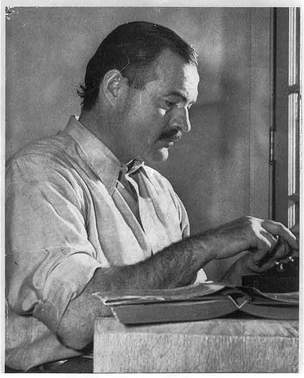

Preface
- Throughout As I Lay Dying, Dewey Dell confronts an unwanted pregnancy and struggles with barriers in the way of seeking medical treatment. Reproductive and bodily autonomy is a common theme in the American Literature canon and this lesson plan uses Dewey Dell's journey as a map for charting a similar fight for bodily and reproductive autonomy in Sandra Cisneros’ story “Woman Hollering Creek.”
- By using the DY Event Search to plot Dewey Dell's journey, students will analyze the impediments in the way of women seeking bodily and reproductive autonomy, including gender roles and socio-economic divisions.
This in turn can be used as a strategy for charting similar journeys for reproductive and bodily autonomy in other classic texts from American Literature found in the Norton Anthology of American Literature, including “The Yellow-Wallpaper,” “Bloodchild,” “Hills Like White Elephants,” and A Streetcar Named Desire.
Activities
1. Charting Dewey Dell’s Journey
Explore: Dewey Dell's Journey
Walkthrough: Event Keyword Search
- The event search function allows the users to search for specific events based on a robust number of attributes including keywords. These keywords were manually entered for each event by the Digital Yoknapatawpha editors. They are extensive but not exhaustive.
Instructions
-
From the DY Main Menu, choose
- Search
- Events
-
On the Events Page
- Set Text to As I Lay Dying
- Type Character Dewey Dell
- Set Character to Present
- Set Cultural Issues to Health and Illness
- Set submenu to Abortion
- Click "Search"
- The Search generates a list of events keyworded with the selected terms
- Click on each highlighted passage
- A record description window will pop-up
- Read the description of the event and the location and take notes on how the event and location could be related to Dewey Dell’s struggle for bodily and reproductive autonomy.
Respond: Quote Analysis
After you have reviewed the sections of As I Lay Dying highlighted in the search above, consider how they tell the story of Dewey Dell’s struggle for bodily and reproductive autonomy.
-
Choose three quotes from As I Lay Dying
- one quote that you believe best explains Dewey Dell’s main problem
- one that best demonstrates her attempt to gain reproductive and bodily autonomy
- one that illustrates the ultimate results of her endeavor
- For each quote, briefly explain why you picked it and what you learned about bodily and reproductive autonomy from the quote.
- Are there any other scenes about her pregnancy not listed on the DY site that you would add to her journey?
Respond: Short Response
Now that you have surveyed the notable events and places that make up Dewey Dell’s struggle for bodily and reproductive autonomy, examine the barriers that were placed in her way. Write a short response to the following interrelated questions.
- What kinds of impediments did she experience and how did they affect her?
- How may her identity as a poor, rural teenager have contributed to the adversity she faced?
- What insights can we learn about the nature of reproductive and bodily autonomy in Faulkner’s era from Dewey Dell’s experience?
2. Pairing: Sandra Cisneros
Respond: "Woman Hollering Creek"
- In "Woman Hollering Creek," Sandra Cisneros tells the story of a pregnant young woman obsessed with telenovelas as a form of escapism from her increasingly abusive husband. Cisneros invokes the mythological figure of La Llorona, an indigenous character from Mexican folklore who drowns her children after her white lover abandons her. In the second half of the story, Cisneros depicts the protagonist's escape from her husband with her baby and unborn child.

- Although Cleofilas lives in more modern times, she, like Dewey Dell, also flees home and crosses a river into a new town in order to seek bodily autonomy. If you were to create your own map of Cleofilas' quest for bodily autonomy, which key passages would you choose?
- Pick three passages that best illustrate this struggle:
- One that explains her main problem
- One that best demonstrates her attempts to assert herself
- one that illustrates the results of her endeavor
- How does her journey for bodily autonomy compare to Dewey Dell's? What kinds of similar barriers did both women encounter?
- What do their experiences tell us about the nature of women's bodily autonomy in their respective eras in American history and geographical locations?
- What does Cleofilas find in her journey that allows her to succeed unlike Dewey Dell?